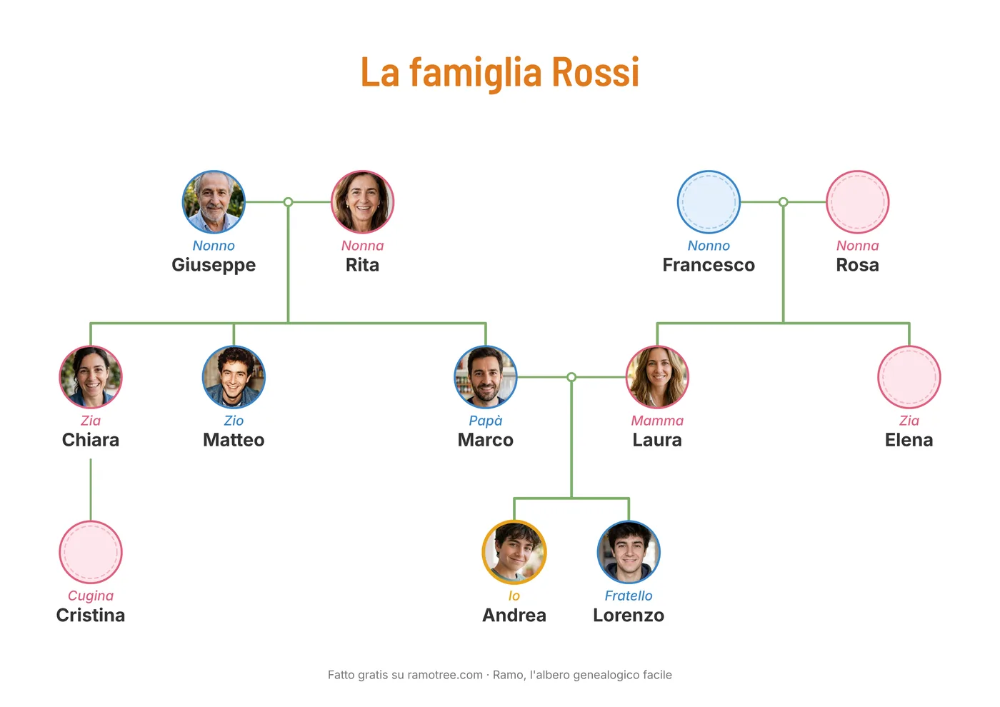

Albero genealogico per bambini: come farlo per la scuola
«Domani bisogna portare l'albero genealogico.» Se ti suona familiare, ecco un modello gratis da stampare, idee per farlo bello e come farlo con tuo figlio senza ansia.
Si fa in un attimo: crea il vostro albero qui, con i nomi e le foto di ognuno o con gli spazi per disegnare, e scaricalo da stampare.

Cosa chiede di solito la scuola
Alla scuola dell'infanzia e alla primaria di solito è un albero di tre generazioni: il bambino, i genitori e i nonni, con una foto o un disegno di ognuno. Più avanti a volte si aggiungono bisnonni, zii e cugini, oppure si fa in inglese per ripassare il vocabolario della famiglia.
Passo dopo passo con tuo figlio
- Le domande le fa lui. Una telefonata o una visita ai nonni per chiedere come si chiamano, dove sono nati e com'erano da piccoli. È la parte che i bambini ricordano di più.
- Foto o disegni. Stampa delle foto piccole o lascia che disegni ognuno nel suo riquadro.
- Compila il modello. I nomi in bella calligrafia e, se c'è spazio, l'anno di nascita.
- Decoralo. Incollalo su un cartoncino, disegna un tronco e una chioma, o fai le foglie con le impronte delle sue mani.
Idee per farlo bello
- Un cartellone con un albero disegnato e le foto sulle foglie.
- Un ramo per ogni lato della famiglia, ognuno di un colore.
- Farlo sul telefono con Ramo e portarlo stampato: esce con la foto di ognuno, in A4 o in A3, e si può stampare in grande da appendere in classe.
Quando la famiglia non entra nel modello
Genitori separati, famiglie allargate, adozioni, due mamme o due papà, nonni che non ci sono più… Il modello è solo un punto di partenza: cancella, aggiungi riquadri o disegna rami nuovi. L'importante è che il bambino riconosca la sua famiglia. In Ramo ognuno può avere più coniugi, e l'albero si sistema da solo.
La famiglia in inglese
Se l'albero va fatto in inglese («My family tree»):
| Italiano | Inglese |
|---|---|
| padre, madre (papà, mamma) | father, mother (dad, mum o mom) |
| genitori | parents |
| fratello, sorella | brother, sister |
| nonno, nonna | grandfather, grandmother (grandpa, grandma) |
| nonni | grandparents |
| bisnonno, bisnonna | great-grandfather, great-grandmother |
| zio, zia | uncle, aunt |
| cugino, cugina | cousin |
| figlio, figlia | son, daughter |
| nipote (figlio del figlio) | grandson, granddaughter |
| nipote (figlio del fratello) | nephew, niece |
| marito, moglie | husband, wife |
Per presentarlo: «This is my grandmother. Her name is Giulia.» E se salta fuori una parentela complicata, il calcolo del grado di parentela la spiega.
Altre guide